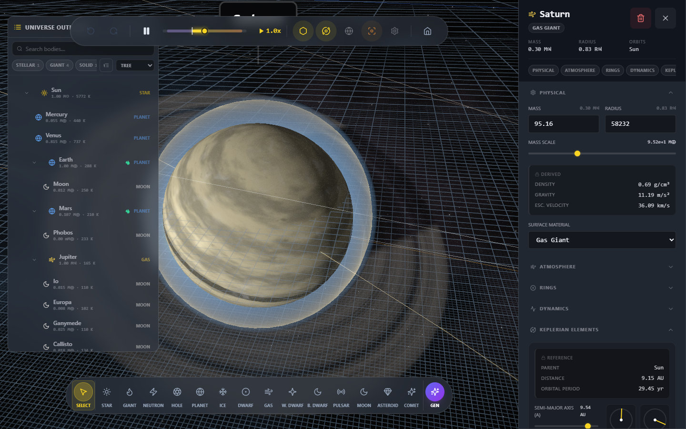
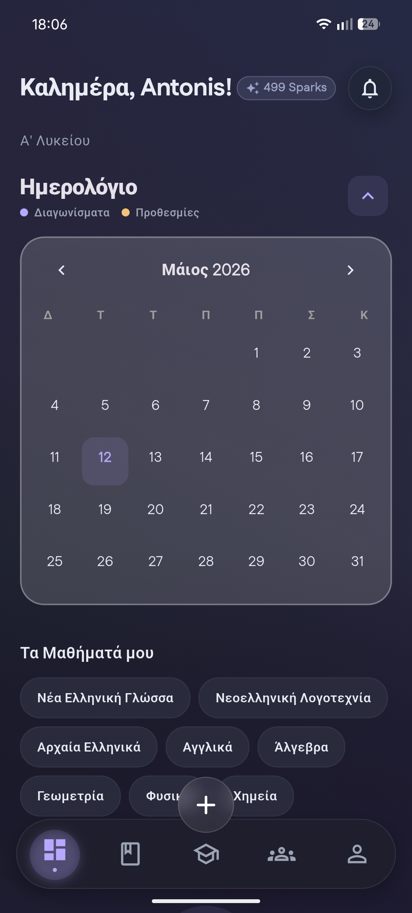
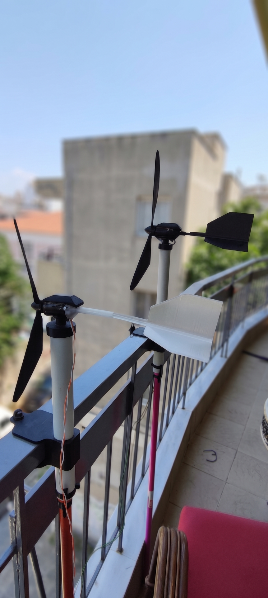
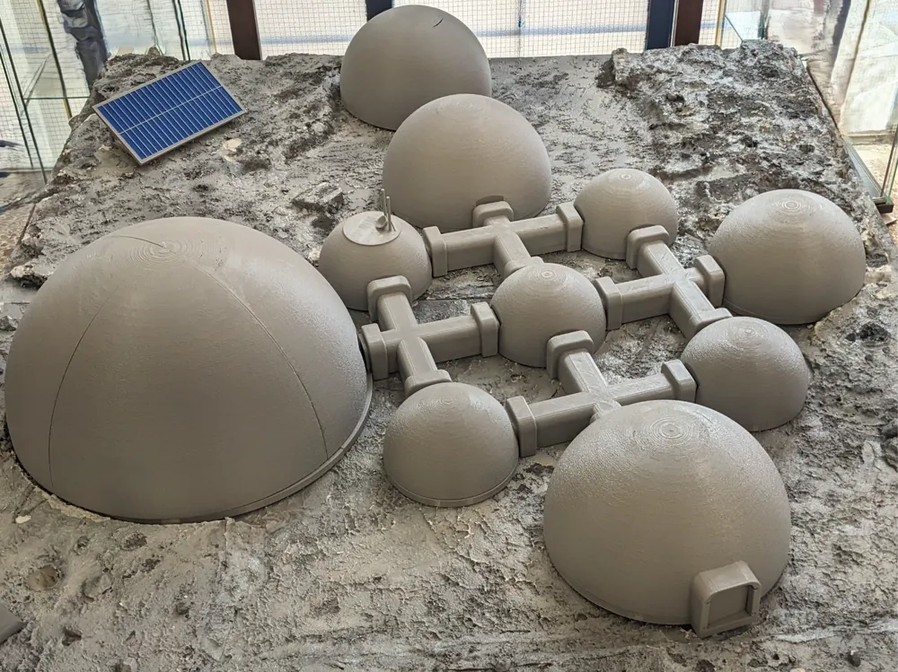
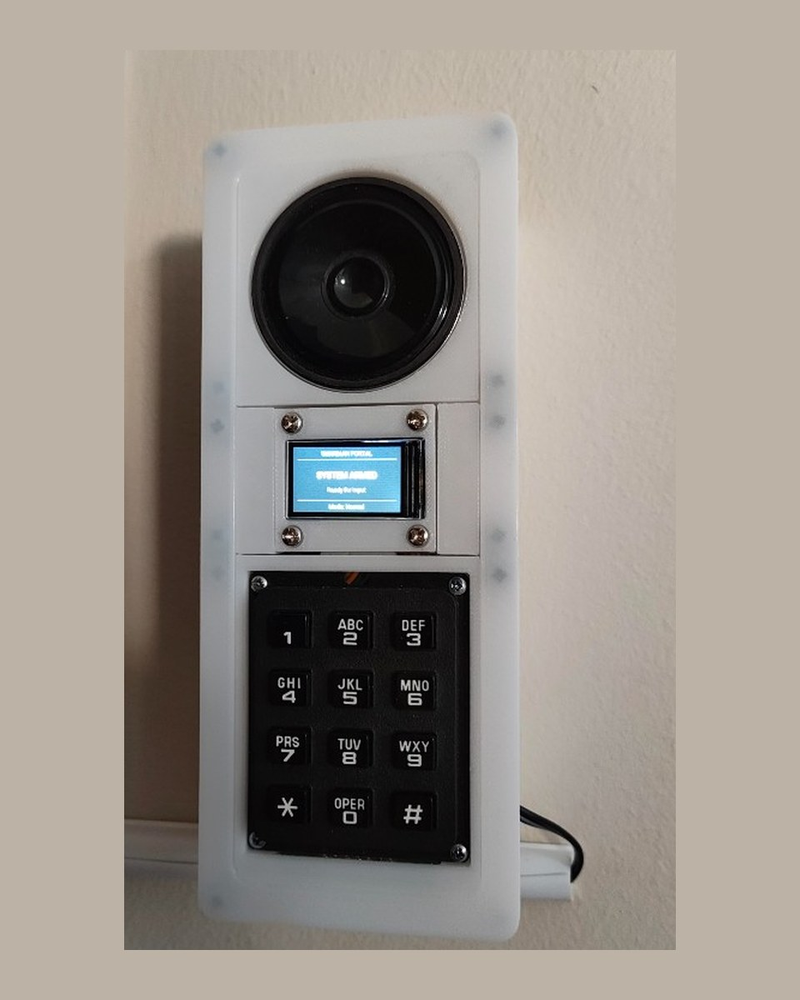
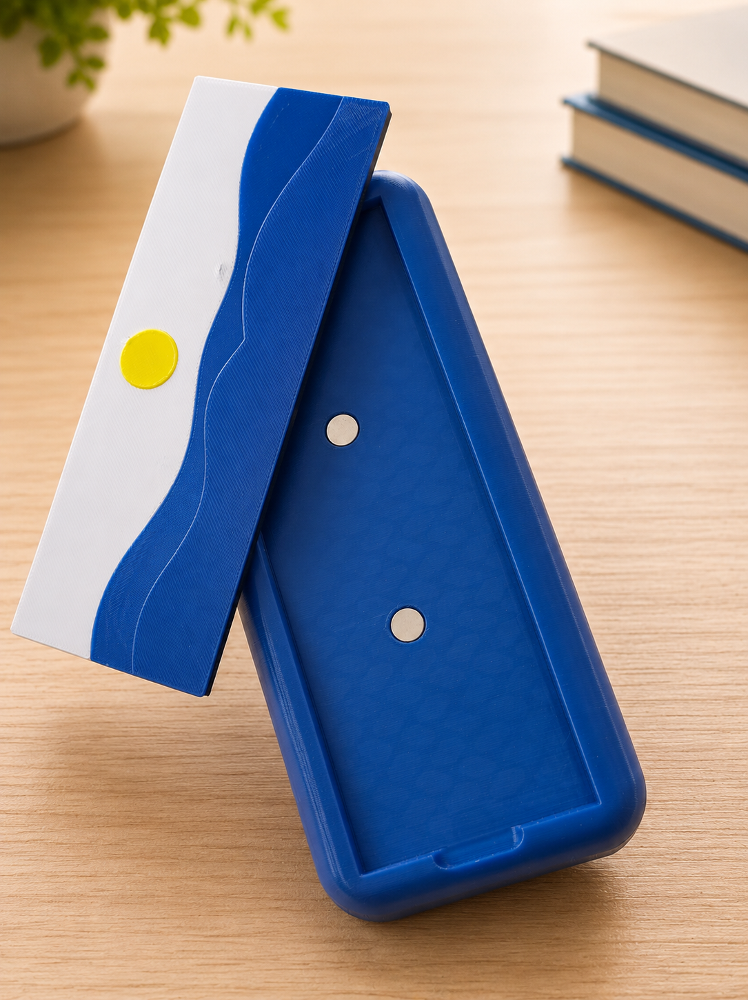
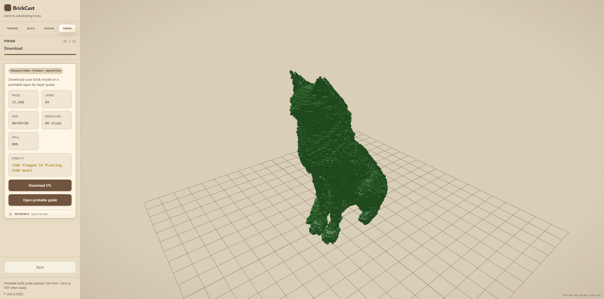

From a 3D printer to product design
I bought my first 3D printer a few years ago and soon fell in love with product design. Learning 3D modeling gave me a way to create the things I could imagine, then refine them into practical products.
LOG_ENTRY // 00
I’m a Greek high-school student in Thessaloniki, building real products across product design, software, 3D printing, and electronics. _
Something orbits at the right edge. Rest your cursor on it → Step through the portal ↑
Outside school, I’m driven by the challenge of turning an idea into something useful. Each new skill has helped me bring more of an idea to life, from the first design to a working product.
I bought my first 3D printer a few years ago and soon fell in love with product design. Learning 3D modeling gave me a way to create the things I could imagine, then refine them into practical products.
Learning Python introduced me to computer science. I use AI tools fluently to explore ideas, speed up prototyping, and improve my productivity. To connect code with physical products, I learned PCB design and soldering, and chose to work directly with microcontrollers and sensors instead of starting with Arduino boards.
I’ve received awards in national-level mathematics and physics competitions. I also study theoretical physics, especially quantum computing, which I hope to pursue at university. AI and quantum computing are the fields I’m excited to keep learning and contributing to.
I approach product building as an iterative process: I work through problems, refine each version, and rebuild when it needs a better foundation. I don’t give up when a project gets difficult.

A Minimalist Cosmic Space Simulator

Production-Grade Student Platform

Functional Balcony Power Generator

Modular Magnetic Lunar Habitat

RFID Entry & Home Security

Magnetic Image Tiles for Modular Glasses Cases

STL to Interlocking Brick Builds with Full Guidance
Have a project or an idea to discuss? I’d love to hear from you.
© 2026 Anthony (Antonis) Psarras
A Minimalist Cosmic Space Simulator
// KEY CAPABILITIES // AETHER-GRAVITY
// PIPELINE SPECIFICATION
Features real-time gravitational interactions with GPU-accelerated particle systems, Hill sphere and Roche limit stability tooling, Kerr-type black holes with gravitational lensing and relativistic Doppler effects, procedural rocky and gas-giant planetary surfaces with cloud and atmosphere layers, plus a full universe sandbox with time control, precision launch mechanics, habitable-zone visualization, and supernova events.
// CLASSIFICATIONS
Production-Grade Student Platform — Real Auth, Real Rules, Real AI
// KEY CAPABILITIES // SCHOLILINK
// PIPELINE SPECIFICATION
Ships with polished light and dark themes, Greek-first localization, and surfaces for schedule, homework workflow, grades, AI study help via Gemini, classroom chat with voice notes and polls, exam-readiness quizzes, and university Μορια planning — all secured server-side. The AI is called exclusively through Cloud Functions; no API key is ever exposed to the client.
// CLASSIFICATIONS
Balcony-Ready Power-Generating System & Off-Grid Charger
// KEY CAPABILITIES // WIND-TURBINE
// PIPELINE SPECIFICATION
A fully functional wind-energy harvesting system custom-engineered for apartment balconies and off-grid battery charging. Built as an optimized FDM 3D-printed assembly, it features a weather-resistant motor cover, structural tail stabilizing braces to prevent plastic creep, and a friction-free bearing-pivot yaw system with clean internal cable management. The integrated electronics pipeline utilizes an on-board Schottky bridge rectifier and dual MT3608 boost converters to regulate erratic, wind-generated voltages into a stable charge current for an 18650 lithium-ion cell via a TP4056 battery management module, providing a robust off-grid power solution.
// CLASSIFICATIONS
Modular Moon Base — A Magnetic Two-Person Lunar Habitat
// KEY CAPABILITIES // MOONCAMP
// PIPELINE SPECIFICATION
Created for an ESA Moon Camp project, MoonCamp turns a lunar south-pole settlement study into a modular physical display. Magnetic shells open to reveal interiors and the connected layout makes power, resources, food, research, healthcare, maintenance, and crew wellbeing easy to explore. It is a conceptual educational scale model, not a certified habitat.
// CLASSIFICATIONS
Open-Source Magnetic Image Tiles for Modular Glasses Cases
// KEY CAPABILITIES // LENSTILE
// PIPELINE SPECIFICATION
An integrated hardware–software system that turns a personal photo into a printable magnetic tile for a custom modular glasses case. The browser app fits artwork to a 148 × 53 mm frame, reduces it to print colors, checks nozzle-aware printability, then builds Smooth or Relief geometry as a one-filament STL or multicolor 3MF — with magnet recesses matching the open-source case on MakerWorld. Everything runs locally; images never leave the device.
// CLASSIFICATIONS
Local-First STL / OBJ to Interlocking Brick Builds
// KEY CAPABILITIES // BRICKCAST
// PIPELINE SPECIFICATION
A local-first browser system that turns triangle meshes into approximate interlocking-brick builds. Most work stays on-device: orientation, voxelization, packing, layer scrubbing, stability checks, inventory, and printable instructions. An optional Advanced Online path can enrich special parts through a local Python proxy without uploading the original STL/OBJ. The result is an optimized brick design with full build guidance — from mesh import to printable step-by-step layers.
// CLASSIFICATIONS
Home Assistant RFID Entry, Presence & Camera-Driven Security
// KEY CAPABILITIES // GUARDIAN-SYSTEM
// PIPELINE SPECIFICATION
Guardian combines Home Assistant automations with ESPHome firmware, two printed RFID devices, a camera and door lamp, and a custom control panel. It runs in one household as a documented DIY system, not a supported security product. The offline siren and recent alarm-path changes still need on-hardware verification.
// CLASSIFICATIONS